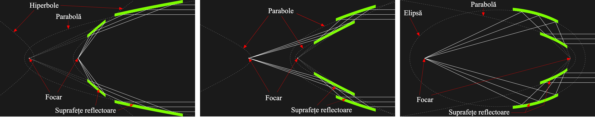

Telescop raze X
Modelele convenționale ale telescoapelor necesită reflexie sau refracție într-un mod care nu funcționează bine pentru razele X. Sistemele optice de lumină vizibilă folosesc fie lentile, fie oglinzi aliniate pentru o incidență aproape normală - adică undele de lumină trec aproape perpendicular pe suprafața reflectorizante sau refractoare. Telescoapele cu oglindă convenționale funcționează prost cu razele X, deoarece razele X care lovesc suprafețele oglinzilor aproape perpendicular sunt absorbite, nu reflectate.
Lentilele pentru lumină vizibilă sunt realizate din materiale transparente cu un indice de refracție substanțial diferit de 1, dar toate materialele cunoscute transparente pentru razele X au indicele de refracție în esență egal cu 1, deci lentilele pentru razele X sunt inutile.
Oglinzile cu raze X pot fi construite numai dacă unghiul față de planul de reflexie este foarte scăzut (de obicei până la 2 grade). Acestea se numesc oglinzi de incidență. În 1952, Hans Wolter a delimitat trei moduri în care un telescop pentru razele X ar putea fi construit. Acestea se numesc telescoape Wolter de tipul I, II și III. Fiecare are avantaje și dezavantaje diferite.
Inovația cheie a lui Wolter a fost că prin utilizarea a două oglinzi este posibil să se creeze un telescop cu un câmp vizual larg utilizabil. În schimb, un telescop cu o singură oglindă de incidență parabolică ar putea focaliza razele X, dar numai foarte aproape de centrul câmpului vizual. Restul imaginii ar suferi de comă extremă.